上海行健职业学院
毕业设计（论文）
题目： 基于java图书管理系统
的设计与实现
年 级： 20
系/专 业： 软件技术
班 级： 2
学生姓名： 魏志远
学 号： 20204040027
指导教师： 黄老师
完成日期： 2022.5.20
目 录
随着知识经济的到来，“图书”这种可以使人以间接方式快速获取知识的工具已经日益受到重视，海量知识数据以及日益加速的知识更新速度所产生的大量图书信息使图书馆管理系统的广泛使用既是可能的也是必要的，通过对图书信息，读者信息以及借阅信息进行的系统化、标准化信息管理可以大大提高图书馆信息处理的速度与效率。其功能的不断完善与丰富极大地方便了图书管理员的工作展开，是信息产业飞速发展的重要体现之一。
目前市面上的图书管理系统层出不穷且各有千秋，但都具有统一的高数据一致性，易操作等特点。其中部分图书管理系统使用身份证号，姓名等作为管理借书者基本资料的依据。但这样带来的弊端就是安全性差，在一方的身份证号码泄露的情况下有可能威胁到用户的利益，所以现今更多的图书管理系统多以读者的基本资料为依据为用户办理借书卡，并通过用户个人密码的设定保证了顾客的安全性。
管理员登录系统后可以查询：
借阅信息（借阅人、书名、状态、借书时间、还书时间）
用户信息（编号、用户名、密码、性别、电话）
书籍信息（编号、书名、类别、作者、价格、库存、状态）
用户登录系统后：
管理员的查询，用户都可以用
可进行书籍借阅和还书，显示库存的变量
3.2管理员的用例图
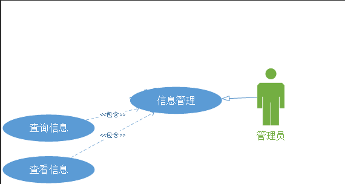
图3-1管理员的用例图
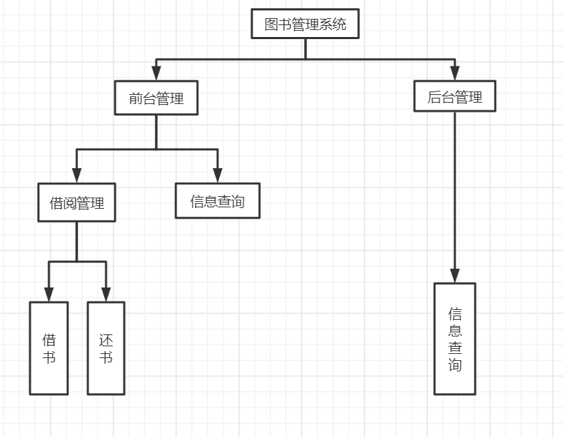
图3-2系统功能图
（1） 管理员查询信息
管理员登录系统后，可以根据需求查询信息，当后台收到查询信息的请求，向数据库发送查询数据的语句，数据查询完成，并显示到UI界面上。（用文字描述整个过程）
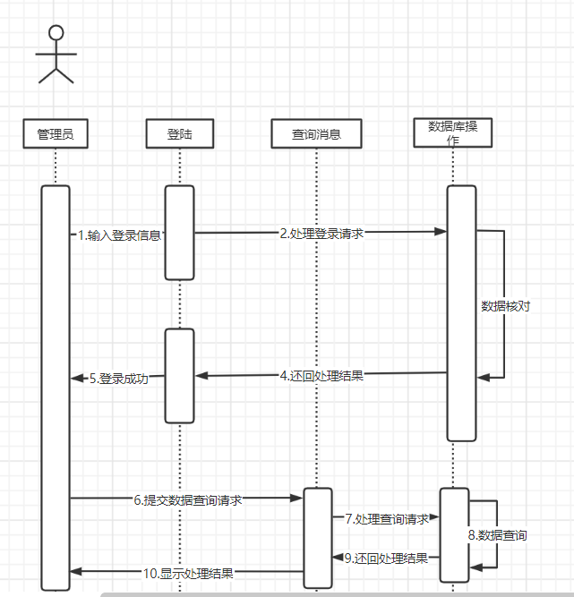
图3-3管理员查询信息时序图
（2）用户借阅还书
用户登录系统后，可以根据需求进行书籍借阅和还书，当后台收到修改信息的请求，向数据库发送修改数据的语句，数据修改成功后返回一条消息提示用户信息修改成功。（用文字描述整个过程）
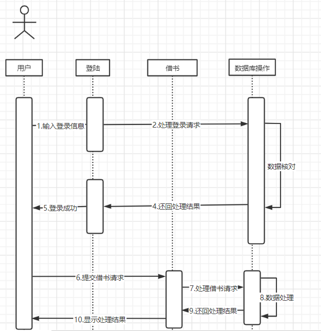
图3-4用户借阅的时序图
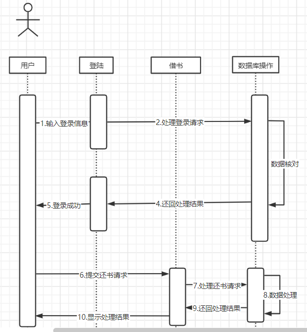
图3-5用户还书的时序图
//画出整个系统的ER图
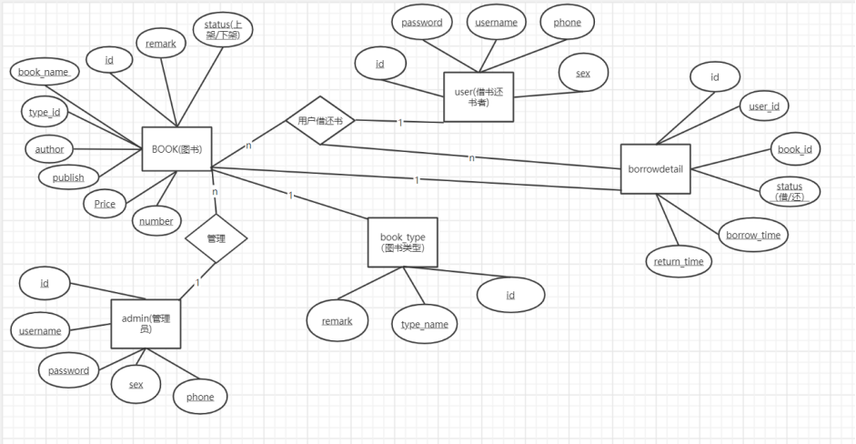 |
1、表Users
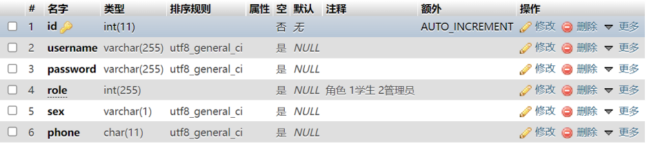
2. book表
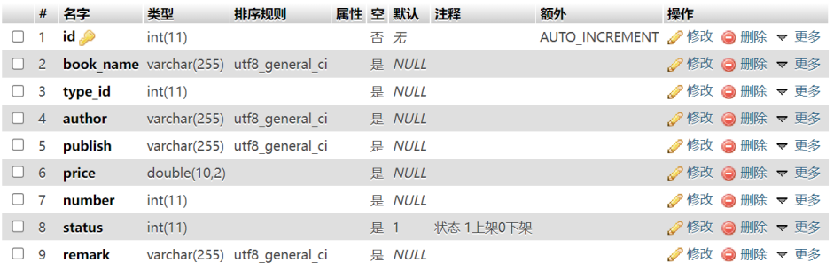
3. book_type表
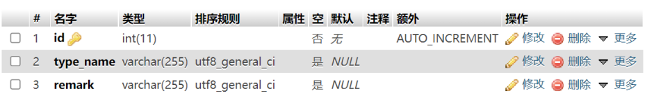
4. Borrowdetail表
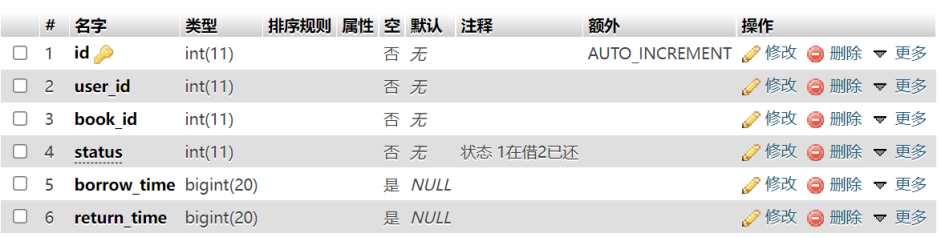
登陆页面上方有着明显的标题并主要显示了本系统的作用，色调主要以灰色为主白色为辅
在页面有登陆账号框、登陆密码框、登陆身份选择下拉框和登陆、注册按钮。
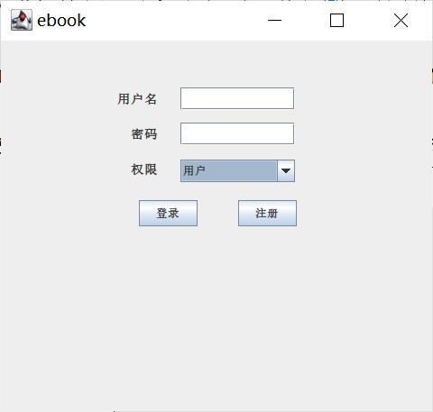
图4-1 系统登录界面实际效果图
当管理员输入正确的账号、密码，选择了正确的身份即可成功登陆并跳转至系统主页面(图3-3)。
当输入了错误的帐号、密码或选择了错误的身份将有弹框或文字提醒。
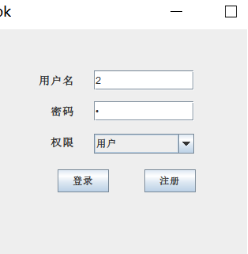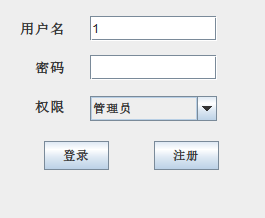
图4-2输入正确帐号密码
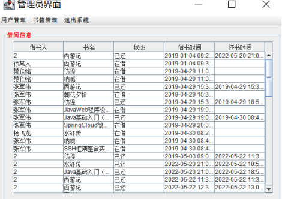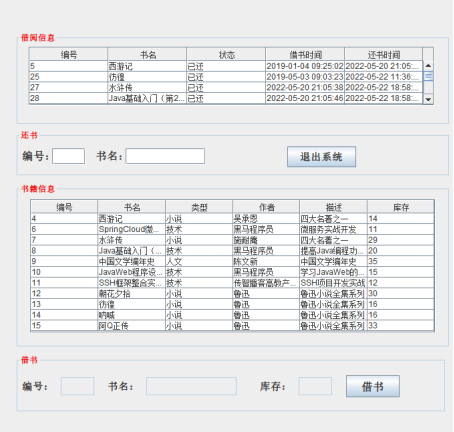
图4-3 系统登录界面实现效果图
protected void checkLogin(ActionEvent e) {
String userName = userNameText.getText();
String password = passwordText.getText();
int index = comboBox.getSelectedIndex();
if (toolUtil.isEmpty(userName) || toolUtil.isEmpty(password)) {
JOptionPane.showMessageDialog(null,"用户名和密码不能为空");
return;
}
User user = new User();
user.setUserName(userName);
user.setPassword(password);
if (index == 0) {
user.setRole(1);
} else {
user.setRole(2);
}
Connection con =null;
try{
con = dbUtil.getConnection();
User login = userDao.login(con,user);
currentUser = login;
if(login == null) {
JOptionPane.showMessageDialog(null,"登录失败");
} else {
//权限 1普通 2管理员
if (index == 0) {
//学生
jf.dispose();
JOptionPane.showMessageDialog(null,"学生登录成功");
new UserMenu();
} else {
//管理员
jf.dispose();
// new AdminMenuFrm();
JOptionPane.showMessageDialog(null,"管理员登录成功");
new AdminBorrowInfo();
}
}
} catch (Exception e21){
e21.printStackTrace();
JOptionPane.showMessageDialog(null,"登录异常");
} finally {
try{
dbUtil.closeCon(con);
} catch (Exception e31) {
e31.printStackTrace();
}
}
}
public static void main(String[] args) {
new LoginFrm();
}
编号 | 测试标题 | 输入 | 期望结果 | 实际结果 |
1 | 用户登录验证：不能为空 | （1）用户名不为空，密码为空； （2）用户名为空，密码不为空； （3）用户名和密码均为空； | （1）密码输入框右方红色*号提醒 （2）用户名输入框右方红色*号提醒 （3）用户名、密码输入框右方红色*号提醒 | Pass |
2 | 用户身份选择：错误提示 | （1）选择管理员身份； （2）选择除管理员的其他身份； （3）不选择任何身份； | （1）无提示 （2）提示“其他身份尚未开通” （3）提示“请选择身份” | Pass |
3 | 用户登录验证：登陆成功 | （1）用户名正确，密码不正确； （2）用户名不正确，密码正确； （3）用户名和密码都不正确； （4）用户名和密码正确； | （1）登陆不成功，提示“用户名或密码错误！” （2）登陆不成功，提示“用户名或密码错误！” （3）登陆不成功，提示“用户名或密码错误！” （4）登陆成功 | Pass |
4 | 用户借书 | （1）不点表格书名，直接点击借书 （2）已经借过的书，再借一次 （3）点击借书库存数量变化 | （1）借书不成功，提示“选择相关书籍” （2）借书不成功，提示“该书已在借，请先还再借” （3）库存数量会减少 | Pass |
5 | 用户还书 | （1）已经还了的书，点击再还 （2）在借的书，只选上面或下面的书本 （3）在借的书，选择的上面下面选择的书籍不一样 （4）在借的书，只选择下面书籍 （5）在还书时，没有在下面一个表格里点击书名，没有更新下面表单数据，导致书籍的库存量数量异常增加 | （6）系统识别到，并不显示还书按钮 （7）书还不了，提示“请选择相同书籍” （8）书还不了，提示“请选择相同书籍” （9）系统没有显示，还书按钮 | NoPass |
N | 用户注册 | （1）都不输入点击注册 （2）不输入用户名，其他都输入 （3）不输入密码，其他都输入 （4）不输入手机号，其他都输入 （5）不输入性别，其他都输入 （7）不输入验证码，其他都输入 | （1）注册不了，提示“没输入验证码” （2-6）注册不了，提示 请输入相关信息 （7）注册不了，提示“没输入验证码” | Pass |
8 | 功能键 | （1）测试全部功能键 | （1）全部功能键都可用 | Pass |
因为代码质量比较一般，因此bug其实也会有挺多的。最常见的bug就是sql语句的错误，导致的服务端崩溃。因为sql语句有很多引号，以及查询条件什么的不清楚，导致数据库无法查询就会引起崩溃等等一些问题。
在源代码的基础上增加了新功能，如注册的验证码和借书和还书都会，更新数据库书本的库存信息，并且库存完了，停止借阅，输错三次密码就退出。
在做书籍管理系统的时候，我学到了很多。